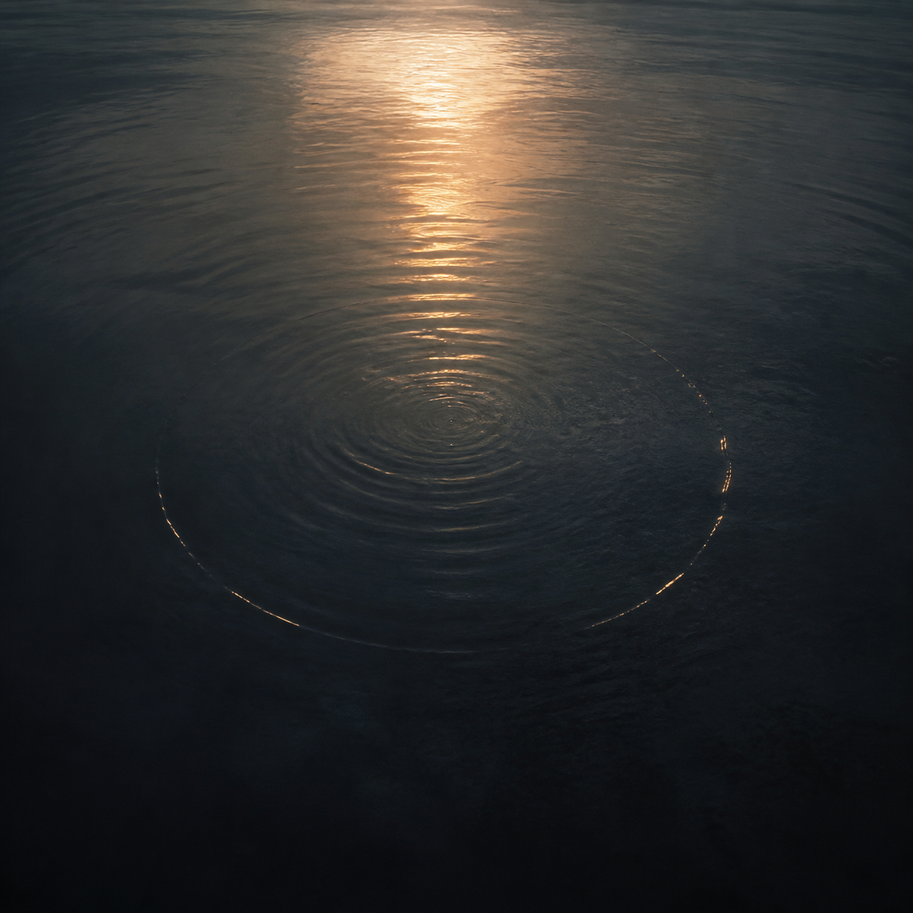
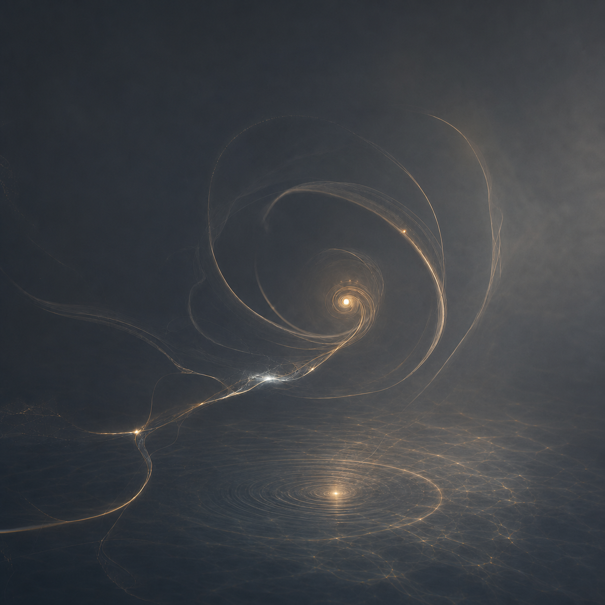

Aaron， Z 作品
2026 · MUSIC ARCHIVE

TRANSFER LIGHT AND SHADOW TO MELODY
化光影，
成旋律。
一首作品，一个仍在回响的片段。
在唱片的纹路里，保存歌词、声音与创作时的微光。
流转之间 · 回响未完成的回响 · V1.6
PORTFOLIO
作品档案
A · Z / WORK

ABOUT THE CREATOR
关于创作
这里记录歌曲、歌词与声音留下的痕迹。
有些作品来自一个人物，有些来自一段路，也有些只是某一天的风、灯光和没有说出口的话。
希望用音乐记录生活，感悟遇见，也把途中遇到的美好分享给愿意停下来听一听的人。